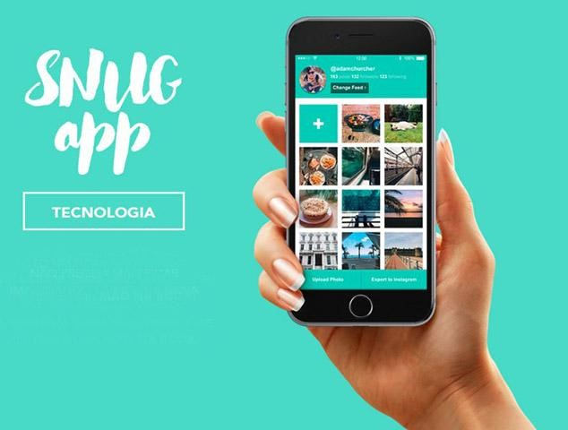
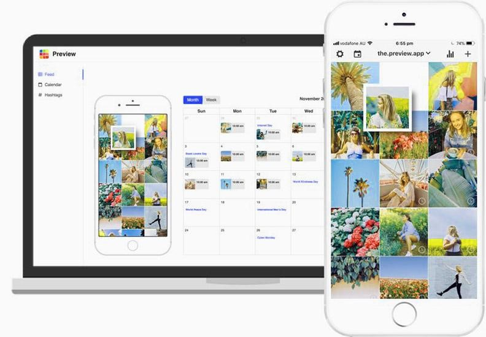
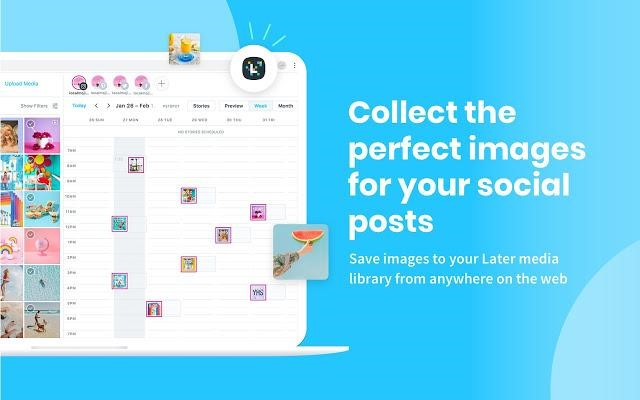
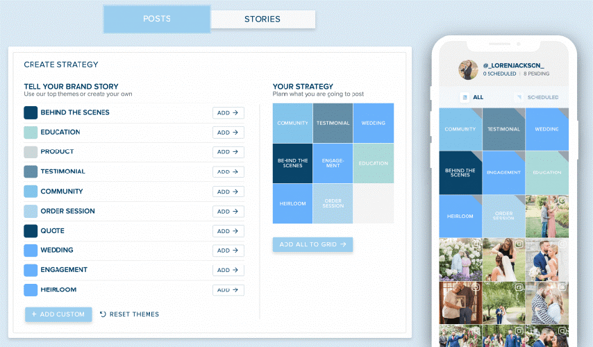
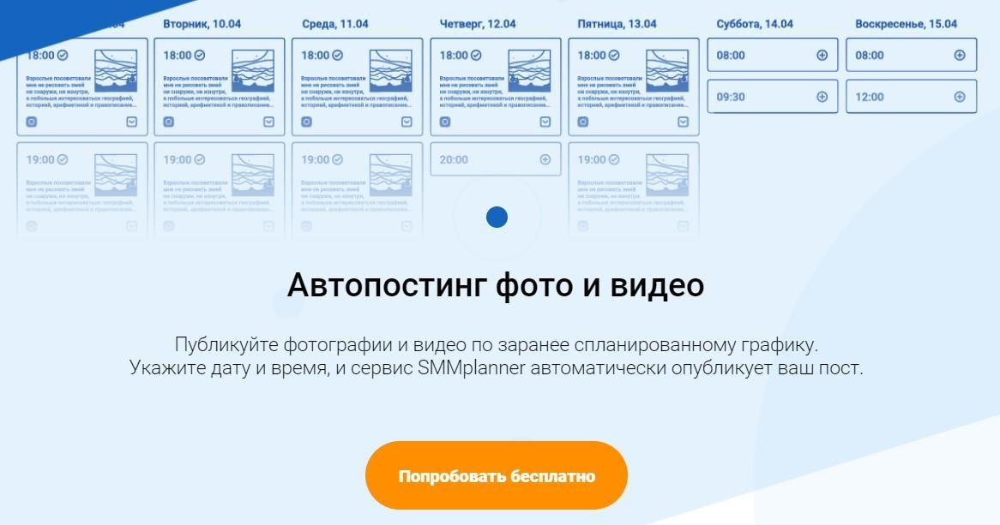

Оформим ленту с помощью помощников (приложения для планирования).
-
После этого продумайте, с каким текстом вы добавите фотокарточки
в аккаунт и когда они будут размещены для оценки подписчиками. Вот несколько приложений
для планирования визуала ленты Инстаграм:
-
Приложение для Айфона Snug. Бесплатное, работает только на iOS. Нет ограничений по загрузке фото или видео. Пользоваться легко, все выбранные файлы легко миксуются и перемещаются по экрану, как вы пожелаете. Функционал ограничен, поэтому внутри нет фоторедактора и календаря для планирований выхода публикаций.
 -
Приложение Preview. Разработано на Андроиде, и есть версия для с iOS. Внутри встроен фоторедактор для обработки не выходя из приложения. Не ограничено количество фоток и видео для составления визуала. Даты выхода публикаций разработчики планируют добавить в следующих обновлениях Preview.
 -
Сервис Later. Работает на Андроиде, Айфонах и можно пользоваться через компьютер. Запланируйте публикации и наблюдайте удобное обновление своего контента.
 -
Plann. Работает на всех смартфонах и системах, а также открывается через браузеры на ПК. Есть встроенный фоторедактор, что сэкономит ваше время. В бесплатный функционал входит отложенный постинг публикаций. При оплате подписки вы получите более широкий и интересный функционал. Чем нам особенно нравится этот сервис — разрешено добавлять карусели для Instagram.

Планирование постов в Инстаграм
Для тех, кто хочет выкладывать готовые публикации автоматически, существует ряд сервисов. Будьте готовы к тому, что работают они, в основном, с компьютера.
-
После этого продумайте, с каким текстом вы добавите фотокарточки
в аккаунт и когда они будут размещены для оценки подписчиками. Вот несколько приложений
для планирования визуала ленты Инстаграм:
-
SMMPlanner. Популярная платформа. Занимается комплексным оказанием услуг по работе с аккаунтом во многих соц.сетях. Автопостинг сториз. Присутствует фоторедактор.
